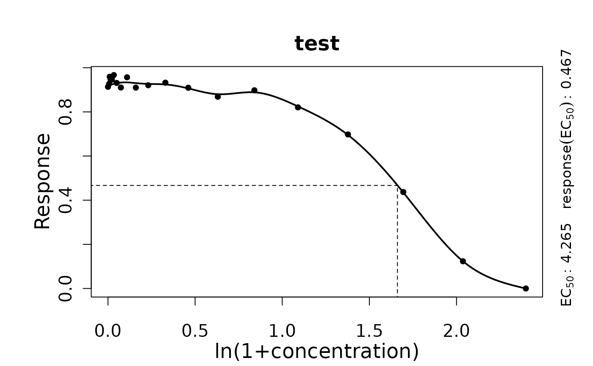

Perform a smooth spline fit on response vs. concentration data of a single sample to determine the EC50.
Source:R/dose-response-analysis.R
growth.drFitSpline.Rdgrowth.drFitSpline performs a smooth spline fit determines the EC50 as the concentration
at the half-maximum value of the response parameter of the spline.
Usage
growth.drFitSpline(conc, test, drID = "undefined", control = growth.control())Arguments
- conc
Vector of concentration values.
- test
Vector of response parameter values of the same length as
conc.- drID
(Character) The name of the analyzed condition
- control
A
grofit.controlobject created withgrowth.control, defining relevant fitting options.
Value
A drFitSpline object.
- raw.conc
Raw data provided to the function as
conc.- raw.test
Raw data for the response parameter provided to the function as
test.- drID
(Character) Identifies the tested condition
- fit.conc
Fitted concentration values.
- fit.test
Fitted response values.
- spline
smooth.splineobject generated by thesmooth.splinefunction.- spline.low
xandyvalues oflowessspline fit on raw data. Used to callsmooth.spline.- parameters
List of parameters estimated from dose response curve fit.
EC50: Concentration at half-maximal response.yEC50: Response value related to EC50.EC50.orig: EC50 value in original scale, if a transformation was applied.yEC50.orig: Response value for EC50 in original scale, if a transformation was applied.
- fitFlag
(Logical) Indicates whether a spline could fitted successfully to data.
- reliable
(Logical) Indicates whether the performed fit is reliable (to be set manually).
- control
Object of class
grofit.controlcontaining list of options passed to the function ascontrol.
Use plot.drFitSpline to visualize the spline fit.
Details
During the spline fit with smooth.spline, higher weights are
assigned to data points with a concentration value of 0, as well as to x-y pairs with
a response parameter value of 0 and pairs at concentration values before
zero-response parameter values.
References
Matthias Kahm, Guido Hasenbrink, Hella Lichtenberg-Frate, Jost Ludwig, Maik Kschischo (2010). grofit: Fitting Biological Growth Curves with R. Journal of Statistical Software, 33(7), 1-21. DOI: 10.18637/jss.v033.i07
Christian Ritz, Florent Baty, Jens C. Streibig, Daniel Gerhard (2015). Dose-Response Analysis Using R. PLoS ONE 10(12): e0146021. DOI: 10.1371/journal.pone.0146021
See also
Other dose-response analysis functions:
flFit(),
growth.drBootSpline(),
growth.gcFit(),
growth.workflow()
Examples
conc <- c(0, rev(unlist(lapply(1:18, function(x) 10*(2/3)^x))),10)
response <- c(1/(1+exp(-0.7*(4-conc[-20])))+rnorm(19)/50, 0)
TestRun <- growth.drFitSpline(conc, response, drID = 'test',
control = growth.control(log.x.dr = TRUE, smooth.dr = 0.8))
#>
#>
#> === Dose response curve estimation ================
#> --- EC 50 -----------------------------------------
#> --> test
#> xEC50 1.63700157762612 yEC50 0.48012308310208
#> --> Original scale
#> xEC50 4.13973528735413 yEC50 0.48012308310208
#>
#>
print(summary(TestRun))
#> EC50 yEC50 EC50.orig yEC50.orig test
#> 1 1.637002 0.4801231 4.139735 0.4801231 NA
plot(TestRun)
